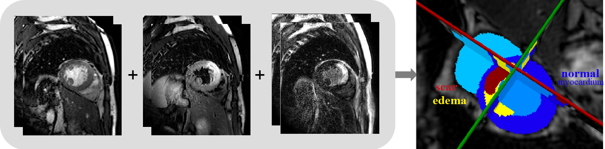

| OverView | New: program released! |
Assessment of myocardial viability is essential in the diagnosis and treatment management for patients suffering from myocardial infarction (MI). Cardiac magnetic resonance (CMR) is particularly used to provide imaging anatomical and functional information of heart, such as the late gadolinium enhancement (LGE) CMR sequence which visualizes MI, the T2-weighted CMR which images the acute injury and ischemic regions, and the balanced- Steady State Free Precession (bSSFP) cine sequence which captures cardiac motions and presents clear boundaries. Combining these multi-sequence CMR data can provide rich and reliable information regarding to the pathological as well as morphological information of the myocardium.
The target of this challenge is combining multi-sequence CMR data to classify the myocardial pathology. Specifically, the myocardium will be classified into normal, infarcted and edema regions, which is important for the diagnosis and treatment management of patients. This is however still arduous. Since manual delineation is generally time-consuming, tedious and subject to inter- and intraobserver variations, automating this segmentation is highly desired in clinical practice.

The proposed challenge will provide the three-sequence CMR from 45 patients, for developing novel algorithms that can classify myocardial pathology combining the complementary information from these three-sequence CMR images. The challenge presents an open and fair platform for various research groups to test and validate their methods on these datasets acquired from the clinical environment. The aim of the challenge will not only be benchmarking various myocardial pathology segmentation algorithms, but also to cover the topic of general cardiac image segmentation, registration and modeling, and raise discussions for further technical development and clinical deployment.
The best work will be selected with awards, similar to MS-CMRseg 2019. A work is assessed based on the novelty of the methodologies, quality of the manuscript, presentation of their paper as well as the test results. The selected papers will be published in our proceedings (see previous proceedings).
Topics may cover (not exclusively):
- Pathology segmentation
- Myocardial segmentation
- Cardiac image processing
- Registration and modeling for cardiac images
This year, we particularly focus on the myocardial pathology segmentation, and the segmentation results submitted will be evaluated.
[2] Xiahai Zhuang: Multivariate mixture model for cardiac segmentation from multi-sequence MRI. International Conference on Medical Image Computing and Computer-Assisted Intervention, pp.581-588, 2016.